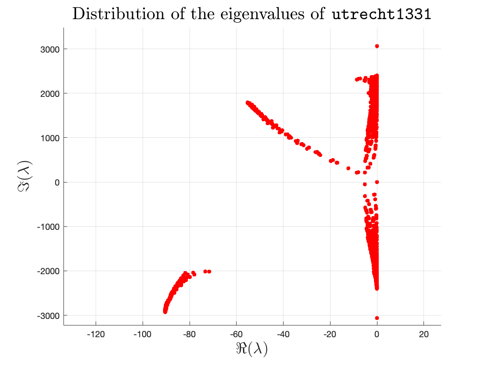
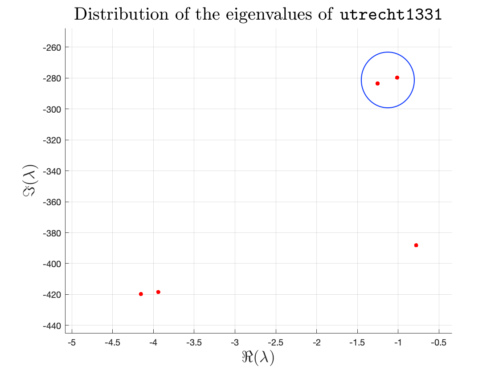

Utrecht1331
utrecht1331 is a new quadratic eigenvalue problem in NLEVP version 4.0 [6]. You can find the NLEVP MATLAB toolbox and the documentations in its Github repository.
Matlab code for utrecht1331
Install the NLEVP toolbox and quadratic-eigensolver which contains the MATLAB function quadeig. Then we can solve the utrecht1331 in Matlab by the following code.
% Utrecht1331 in NLEVP
%% Clear the workspace and the command window
clear;
clc;
%% Load the matrices
load utrecht1331
%% Get the coefficients of the eigenvalue problem
lambda = quadeig(M, D, K);
%% Plot the distribution of eigenvalues
% Use LaTeX by default for all labels
set(groot,'defaultTextInterpreter','latex')
scatter(real(lambda), imag(lambda), 150, "red", ".");
% Set title, axis limit, labels
title('Distribution of the eigenvalues of \texttt{utrecht1331}', 'FontSize', 20)
axis([-18, 0, -600, 500])
xlabel('$\Re(\lambda)$', 'FontSize',18);
ylabel('$\Im(\lambda)$', 'FontSize',18);
grid on;
This figure shows the distribution of the eigenvalues of utrecht1331.
Contour integral method
Since utrecht1331 is a quadratic eigenvalue problem (then, of course, it is holomorphic with repect to the eigenvalue), we can use the contour integral method to solve this problem.
First, we need to load our package.
using CimWe also need MAT.jl to read the coefficients of the utrecht1331.
using MATRead the three matrices by using matread in MAT. You can download utrecht1331.mat from Github repository.
coeffs = matread("literate/utrecht1331.mat")Dict{String, Any} with 3 entries:
"M" => sparse([1, 2, 3, 4, 5, 6, 7, 8, 9, 10 … 1322, 1323, 1324, 1325, 1326…
"D" => sparse([1211, 1212, 1213, 1214, 1215, 1216, 1217, 1218, 1219, 1220 … …
"K" => sparse([1, 2, 12, 122, 1, 2, 3, 12, 13, 122 … 1329, 1330, 1331, 1199…Extract these three matrices and convert the real matrices to complex.
M, D, K = coeffs["M"], coeffs["D"], coeffs["K"]
M = complex.(M)
K = complex.(K)1331×1331 SparseArrays.SparseMatrixCSC{ComplexF64, Int64} with 20591 stored entries:
⎡⠻⣦⡀⠘⢷⣄⠀⠀⠀⠀⠀⠀⠀⠀⠀⠀⠀⠀⠀⠀⠀⠀⠀⠀⠀⠀⠀⠀⠀⠀⠀⠀⠀⠀⠀⠀⠀⠀⠀⠀⎤
⎢⣀⠈⠻⣦⡀⠙⢷⣄⠀⠀⠀⠀⠀⠀⠀⠀⠀⠀⠀⠀⠀⠀⠀⠀⠀⠀⠀⠀⠀⠀⠀⠀⠀⠀⠀⠀⠀⠀⠀⠀⎥
⎢⠙⢷⣄⠈⠻⣦⡀⠙⢷⣄⠀⠀⠀⠀⠀⠀⠀⠀⠀⠀⠀⠀⠀⠀⠀⠀⠀⠀⠀⠀⠀⠀⠀⠀⠀⠀⠀⠀⠀⠀⎥
⎢⠀⠀⠙⢷⣄⠈⠻⣦⡀⠙⠷⣄⠀⠀⠀⠀⠀⠀⠀⠀⠀⠀⠀⠀⠀⠀⠀⠀⠀⠀⠀⠀⠀⠀⠀⠀⠀⠀⠀⠀⎥
⎢⠀⠀⠀⠀⠙⢷⣄⠈⠻⣦⡀⠙⢷⣄⠀⠀⠀⠀⠀⠀⠀⠀⠀⠀⠀⠀⠀⠀⠀⠀⠀⠀⠀⠀⠀⠀⠀⠀⠀⠀⎥
⎢⠀⠀⠀⠀⠀⠀⠙⢧⣄⠈⠻⣦⡀⠙⢳⣄⠀⠀⠀⠀⠀⠀⠀⠀⠀⠀⠀⠀⠀⠀⠀⠀⠀⠀⠀⠀⠀⠀⠀⠀⎥
⎢⠀⠀⠀⠀⠀⠀⠀⠀⠙⢷⣄⠈⠻⣦⡀⠙⢷⣄⠀⠀⠀⠀⠀⠀⠀⠀⠀⠀⠀⠀⠀⠀⠀⠀⠀⠀⠀⠀⠀⠀⎥
⎢⠀⠀⠀⠀⠀⠀⠀⠀⠀⠀⠙⢶⣄⠈⠻⣦⡀⠙⢷⣄⠀⠀⠀⠀⠀⠀⠀⠀⠀⠀⠀⠀⠀⠀⠀⠀⠀⠀⠀⠀⎥
⎢⠀⠀⠀⠀⠀⠀⠀⠀⠀⠀⠀⠀⠙⢷⣄⠈⠻⣦⡀⠙⢷⣄⠀⠀⠀⠀⠀⠀⠀⠀⠀⠀⠀⠀⠀⠀⠀⠀⠀⠀⎥
⎢⠀⠀⠀⠀⠀⠀⠀⠀⠀⠀⠀⠀⠀⠀⠙⢷⣄⠈⠻⣦⡀⠙⢷⣄⠀⠀⠀⠀⠀⠀⠀⠀⠀⠀⠀⠀⠀⠀⠀⠀⎥
⎢⠀⠀⠀⠀⠀⠀⠀⠀⠀⠀⠀⠀⠀⠀⠀⠀⠙⢷⣄⠈⠻⣦⡀⠙⢷⣄⠀⠀⠀⠀⠀⠀⠀⠀⠀⠀⠀⠀⠀⠀⎥
⎢⠀⠀⠀⠀⠀⠀⠀⠀⠀⠀⠀⠀⠀⠀⠀⠀⠀⠀⠙⢷⣄⠈⠻⣦⡀⠙⢷⣄⠀⠀⠀⠀⠀⠀⠀⠀⠀⠀⠀⠀⎥
⎢⠀⠀⠀⠀⠀⠀⠀⠀⠀⠀⠀⠀⠀⠀⠀⠀⠀⠀⠀⠀⠙⢷⣄⠈⠻⣦⡀⠙⢷⣄⠀⠀⠀⠀⠀⠀⠀⠀⠀⠀⎥
⎢⠀⠀⠀⠀⠀⠀⠀⠀⠀⠀⠀⠀⠀⠀⠀⠀⠀⠀⠀⠀⠀⠀⠙⢷⣄⠈⠻⣦⡀⠙⢷⣄⠀⠀⠀⠀⠀⠀⠀⠀⎥
⎢⠀⠀⠀⠀⠀⠀⠀⠀⠀⠀⠀⠀⠀⠀⠀⠀⠀⠀⠀⠀⠀⠀⠀⠀⠙⢷⣄⠈⠻⣦⡀⠙⢳⣄⠀⠀⠀⠀⠀⠀⎥
⎢⠀⠀⠀⠀⠀⠀⠀⠀⠀⠀⠀⠀⠀⠀⠀⠀⠀⠀⠀⠀⠀⠀⠀⠀⠀⠀⠙⢷⣄⠈⠻⣦⡀⠙⢷⣄⠀⠀⠀⠀⎥
⎢⠀⠀⠀⠀⠀⠀⠀⠀⠀⠀⠀⠀⠀⠀⠀⠀⠀⠀⠀⠀⠀⠀⠀⠀⠀⠀⠀⠀⠙⢶⣄⠈⠻⣦⡀⠙⢷⣄⠀⠀⎥
⎢⠀⠀⠀⠀⠀⠀⠀⠀⠀⠀⠀⠀⠀⠀⠀⠀⠀⠀⠀⠀⠀⠀⠀⠀⠀⠀⠀⠀⠀⠀⠙⢷⣄⠈⠻⣦⡀⠙⢷⣄⎥
⎢⠀⠀⠀⠀⠀⠀⠀⠀⠀⠀⠀⠀⠀⠀⠀⠀⠀⠀⠀⠀⠀⠀⠀⠀⠀⠀⠀⠀⠀⠀⠀⠀⠙⢷⣄⠈⠻⣦⡀⠉⎥
⎣⠀⠀⠀⠀⠀⠀⠀⠀⠀⠀⠀⠀⠀⠀⠀⠀⠀⠀⠀⠀⠀⠀⠀⠀⠀⠀⠀⠀⠀⠀⠀⠀⠀⠀⠙⢷⡄⠈⠻⣦⎦Get the size of the matrices
d = size(D, 1)1331Construct the quadratic eigenvalues problem by Qep.
Q = Qep{ComplexF64}(A₀ = K, A₁ = D, A₂ = M)Qep{ComplexF64}(sparse([1, 2, 12, 122, 1, 2, 3, 12, 13, 122 … 1329, 1330, 1331, 1199, 1209, 1210, 1319, 1320, 1330, 1331], [1, 1, 1, 1, 2, 2, 2, 2, 2, 2 … 1330, 1330, 1330, 1331, 1331, 1331, 1331, 1331, 1331, 1331], ComplexF64[23120.002 + 0.0im, -7706.6675 + 0.0im, -7706.6675 + 0.0im, -7706.6675 + 0.0im, -7706.6675 + 0.0im, 57800.004 + 0.0im, -7706.6675 + 0.0im, -3853.3337 + 0.0im, -15413.335 + 0.0im, -3853.3337 + 0.0im … -7706.6685 + 0.0im, 57800.016 + 0.0im, -7706.6685 + 0.0im, -3853.334 + 0.0im, -3853.3342 + 0.0im, -7706.6685 + 0.0im, -3853.3342 + 0.0im, -7706.6685 + 0.0im, -7706.6685 + 0.0im, 34680.008 + 0.0im], 1331, 1331), sparse([1211, 1212, 1213, 1214, 1215, 1216, 1217, 1218, 1219, 1220 … 1322, 1323, 1324, 1325, 1326, 1327, 1328, 1329, 1330, 1331], [1211, 1212, 1213, 1214, 1215, 1216, 1217, 1218, 1219, 1220 … 1322, 1323, 1324, 1325, 1326, 1327, 1328, 1329, 1330, 1331], ComplexF64[1.58369732 + 11.8777304im, 2.37554598 + 17.8165951im, 2.37554598 + 17.816597im, 2.37554598 + 17.8165932im, 2.3755455 + 17.8165932im, 2.37554622 + 17.816597im, 2.37554646 + 17.8166008im, 2.37554646 + 17.8166008im, 2.37554646 + 17.8166008im, 2.37554646 + 17.8166008im … 2.37554646 + 17.8166008im, 2.37554646 + 17.8166008im, 2.37554646 + 17.8165989im, 2.37554598 + 17.8165951im, 2.37554646 + 17.8165989im, 2.37554693 + 17.8166027im, 2.37554693 + 17.8166027im, 2.37554693 + 17.8166027im, 2.37554693 + 17.8166027im, 1.58369803 + 11.8777351im], 1331, 1331), sparse([1, 2, 3, 4, 5, 6, 7, 8, 9, 10 … 1322, 1323, 1324, 1325, 1326, 1327, 1328, 1329, 1330, 1331], [1, 2, 3, 4, 5, 6, 7, 8, 9, 10 … 1322, 1323, 1324, 1325, 1326, 1327, 1328, 1329, 1330, 1331], ComplexF64[0.0026666669 + 0.0im, 0.016000001 + 0.0im, 0.016000001 + 0.0im, 0.016000003 + 0.0im, 0.015999999 + 0.0im, 0.015999999 + 0.0im, 0.016000004 + 0.0im, 0.016000004 + 0.0im, 0.016000004 + 0.0im, 0.016000004 + 0.0im … 0.016000008 + 0.0im, 0.016000008 + 0.0im, 0.016000008 + 0.0im, 0.016000006 + 0.0im, 0.016000008 + 0.0im, 0.016000012 + 0.0im, 0.016000012 + 0.0im, 0.016000012 + 0.0im, 0.016000012 + 0.0im, 0.013333344 + 0.0im], 1331, 1331))Construct the contour.
elp = Cim.ellipse([-1.0, -281.0], 1.0, 4.0)Cim.ellipse([-1.0, -281.0], 1.0, 4.0)We want to get the two eigenvalues inside the blue circle in the below figure

Solve the eigenvalue problem
λ = cim(elp, Q, d, 5)
# Plain code2-element Vector{ComplexF64}:
-1.2528167592195452 - 283.5608305951595im
-1.0122372738644856 - 279.74004320277936imusing Cim
using MAT
# Be careful of the path of utrecht1331.mat
coeffs = matread("utrecht1331.mat")
M, D, K = coeffs["M"], coeffs["D"], coeffs["K"]
M = complex.(M)
K = complex.(K)
d = size(D, 1)
Q = Qep{ComplexF64}(A₀ = K, A₁ = D, A₂ = M)
elp = Cim.ellipse([-1.0, -281.0], 1.0, 4.0)
λ = cim(elp, Q, d, 5)This page was generated using Literate.jl.